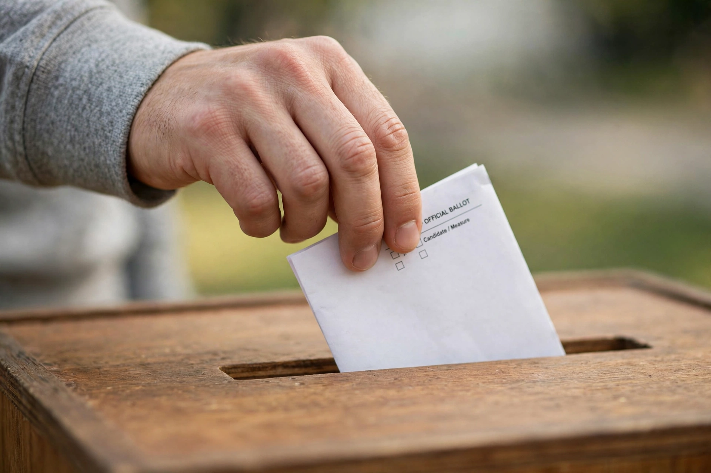

Electoral system
From Wikipedia, the free encyclopedia
An electoral system (or voting system) is the set of rules used to determine the outcome of elections: how votes are cast, how they are counted, and how they are translated into seats or a winning candidate. Electoral systems are a central subject of political science (psephology) because the same distribution of votes can produce very different results under different rules.

A voter's hand dropping a paper ballot into a ballot box — the physical act at the heart of every electoral system.
Families of systems
Majoritarian systems aim for clear winners: first-past-the-post (plurality in single-member districts), the two-round system, and preferential methods such as the alternative vote. Proportional systems aim to mirror vote shares in seats: party-list PR (with open or closed lists and various allocation formulas), the single transferable vote, and mixed-member proportional systems that combine local members with compensatory list seats. Semi-proportional and hybrid systems blend elements.
Effects and criteria
Duverger's law associates plurality rules with two-party systems and PR with multiparty systems; district magnitude, legal thresholds, ballot structure and assembly size all matter. Systems are evaluated against criteria including proportionality, accountability of individual members, stable and effective government, simplicity, voter choice, and the representation of women and minorities — values that trade off against one another, which is why electoral reform (as in New Zealand's 1993 adoption of MMP, or recurring UK debates) is permanently contested.
See also
Election · Voting · Democracy · Political party · Referendum